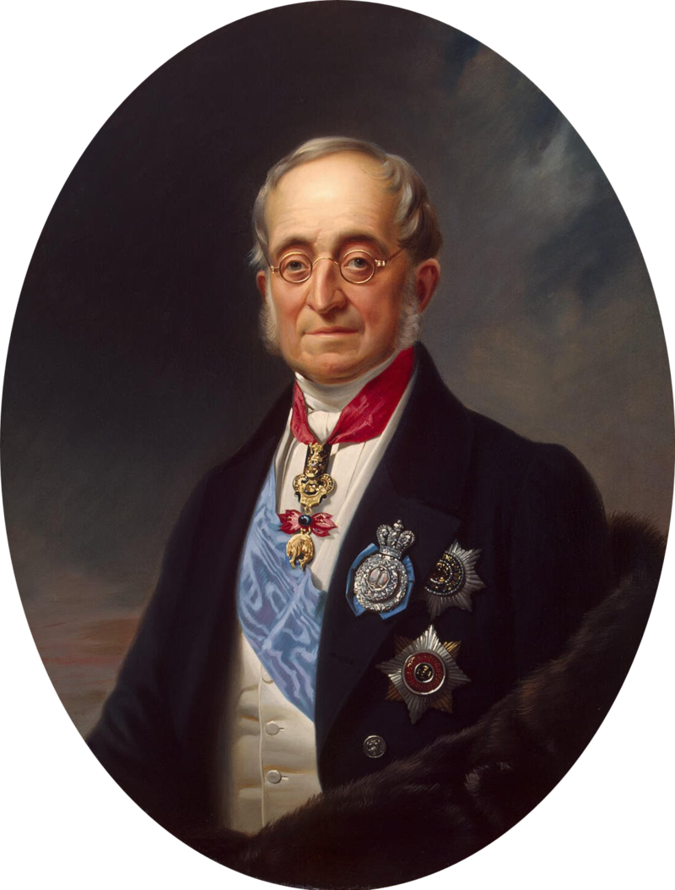
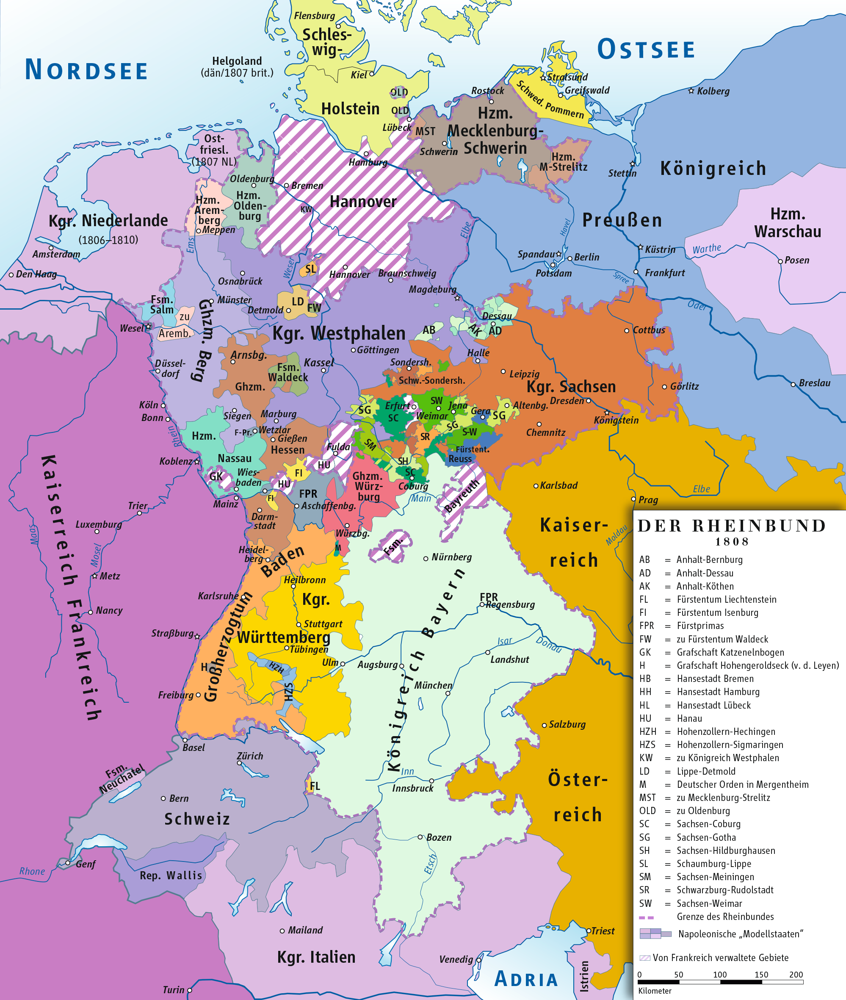
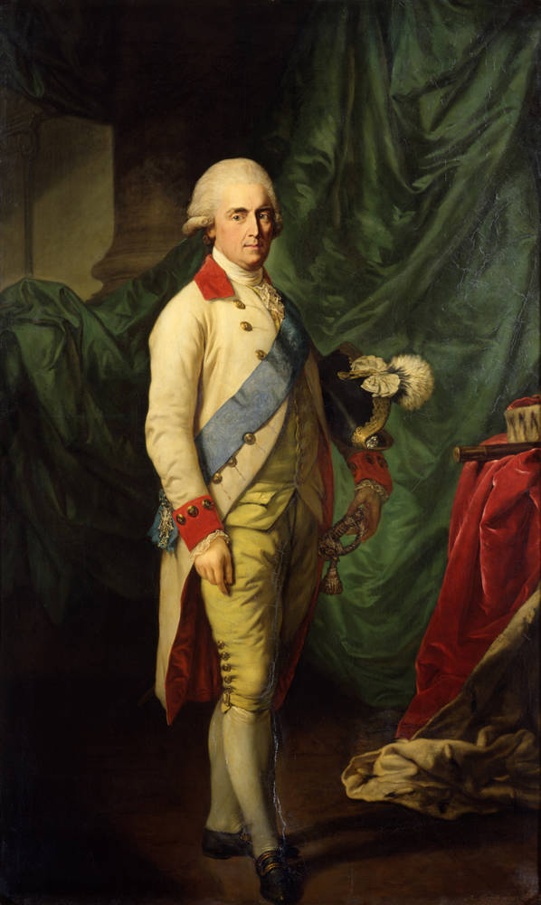

1813년, 작센을 둘러싼 갈등
게시: 2022-06-13T06:30:28+09:00
3월 24일, 블뤼허가 드디어 작센 영토인, 아니 이제 프로이센 영토라고 선언된 코트부스로 들어갈 때 블뤼허의 조치에 대한 이야기를 들은 칼리쉬의 쿠투조프는 기분이 팍 상해버렸습니다. 가장 현실적인 문제는 프로이센군이 러시아군을 젖히고 코트부스에 대한 소유권을 주장하며 당장 보급물자를 챙겼다는 것이었지만, 총사령관이자 연합군 사령관으로 쿠투조프는 그런 소소한 문제를 지적할 수는 없었습니다. 쿠투조프가 문제를 삼은 부분은 블뤼허의 포고문에 '동맹국'이라는 애매모호한 이야기만 씌여있을 뿐, 러시아라는 단어가 하나도 들어가지 않았다는 점이었습니다. 게다가 블뤼허의 조치에 대해 화가 난 작센 관리들이 러시아 사령부에까지 '코트부스가 프로이센 영토가 되는 것이 정말 짜르의 뜻 맞느냐'라며 항의를 해오자, 그에 대해 뭐라고 답을 해야할지 무척 곤란했습니다. 알렉산드르도 이 사건에 대해 무척 언짢게 생각했습니다. 특히 그는 코트부스와 같은 조그마한 영토 문제보다도, 블뤼허가 코트부스 주민들 뿐만 아니라 작센 국민 일반을 향해서도 '나폴레옹의 프랑스에 대해 일어나 싸우라'고 독려한 것에 대해 무척 우려했습니다. 무엇보다, 블뤼허, 정확하게는 그나이제나우가 작센 국민들에게 호소한 내용 중 '너희 국왕 프리드리히 아우구스투스의 명령과는 상관없이 프랑스에 저항하여 싸우라'는 부분은 전제군주가 통치하는 유럽의 질서를 크게 뒤흔드는 나쁜 내용이라고 판단했습니다. 전에 독일에서 나폴레옹과 어떻게 싸울 것인지에 대해 논의를 할 때, 네셀로더(Karl Robert Reichsgraf von Nesselrode-Ehreshoven)가 짜르에게 했던 말에 대해 알렉산드르로 공감하며 동의했기 때문이었습니다. 네셀로더는 나폴레옹의 압제에 저항하는 독일 민중의 봉기를 유도하는 것은 무척 어리석은 짓이며, 아래로부터의 자발적인 정치적 행동은, 그게 자코뱅 선동가에 의한 것이든 프로이센의 애국심 넘치는 장군에 의한 것이든, 결국 유럽을 더 심각한 혼란 속에 몰아넣을 것이라고 말한 바 있었습니다.

(독일 출신의 러시아 외교관인 네셀로더입니다. 당시 33세였던 그는 특이하게도 포르투갈 리스본 앞바다의 선박 안에서 태어난, 진짜 국제적인 인물이라고 할 수 있습니다. 그의 가문은 원래 서부 독일 출신으로서 신성로마제국의 귀족 가문이었으나, 그의 아버지인 네셀로더 백작은 러시아 황실을 위해 외교관으로 일했습니다. 그가 리스본 앞바다에서 태어난 이유도 그의 부모가 주리스본 러시아 대사로 부임하던 길이었기 때문이었습니다. 그는 8세의 나이로 러시아 해군에 입대하여 군 경력을 쌓기 시작했으나, 그건 당시 군 경력을 서류상으로만 쌓던 귀족 사회의 편법 관행일 뿐이었고, 실제로는 베를린에서 계속 교육을 받았습니다. 그래서 그는 계속 러시아 외교관으로 일했지만 정작 러시아어는 매우 서툴게 말했을 뿐이었고, 프랑스어와 독일어를 유창하게 했습니다. 그는 19세기 중반 러시아의 외교를 좌지우지한 매우 중요한 인물로서, 1848년 헝가리 반란을 진압하는데 러시아군을 파견하기도 하고, 일본에 칙사를 파견하여 조약을 맺기도 했으며, 러시아령 알래스카의 국경선을 정하기도 했습니다. 지금도 미국-캐나다 접경 지대의 알래스카 남단에는 그의 이름을 딴 네셀로드 산이 있습니다.) 결국 쿠투조프는 4월 5일 블뤼허에게 편지를 보내어 그의 부적절한 포고문에 대해 엄중히 경고하며 향후에는 정치적 함의를 가진 포고문을 발표하지 말라고 명령했습니다. 그러나 러시아 장군으로부터 질책을 듣는 것보다 더 심하게 블뤼허와 그나이제나우의 마음을 아프게 한 것은 바로 프로이센 국왕 프리드리히 빌헬름이 누구보다 열성적으로 러시아 편을 들며 블뤼허의 포고문을 비난했다는 점이었습니다. 프리드리히 빌헬름도 블뤼허의 포고문이 어떤 의도로 발행된 것인지 잘 알고 있었습니다. 그러나 그는 지난 몇 년 동안 개혁파 각료들이 전제군주의 권위를 고려하지 않고 제멋대로 중대사를 결정하는 것이, 비록 그런 결정이 자신의 왕국 프로이센에 유리한 것이라고 해도, 계속 신경이 거슬렸습니다. 그런데 마침 자신과 같은 전제군주인 알렉산드르가 블뤼허의 포고문에 대해 우려를 표시한 것이 프리드리히 빌헬름에게는 천군만마 같은 도움이 되었던 것입니다. 특히 두 군주는 공통적으로 나폴레옹과 맞서 싸우는데 있어서 평민들에게 호소한다는 점을 매우 싫어했습니다. 아이러니컬한 점은 알렉산드르의 그런 간섭이 전제군주로서의 프리드리히 빌헬름에게는 큰 지지가 될지는 몰라도 국가로서의 프로이센에게는 큰 손해였다는 것입니다. 블뤼허나 그나이제나우로서는 무척 억울한 일이었습니다. 프로이센군이 작센 영토에 들어가서 물자를 징발하고 청년들을 징집하려는데 아무런 입장 표명 없이 그냥 다짜고짜 그럴 수는 없었습니다. 그래서 블뤼허와 그나이제나우는 계속 브레슬라우의 임시 행궁을 향해 '작센 주민들에게 발표할 포고문을 달라'고 요청했었습니다. 그걸 주지 않은 것은 분명히 브레슬라우의 프로이센 궁정이었습니다. 그러나 승전 이후 영토 문제에 있어서 지도에 아직 명확하게 경계선을 그리지 않았던 러시아와 프로이센의 두 전제군주는 이 문제에 대해 서로 언급하기를 꺼렸고, 그로 인해서 애타게 포고문을 요청하는 블뤼허에게 아무런 답장을 주지 않았던 것입니다. 이를 잘 알고 있던 하르덴베르크는 블뤼허에 대한 견책 조치를 막으려 온갖 애를 다 썼고 심지어 항의의 표시로 사임하려고까지 했습니다만, 결국 블뤼허가 견책을 당하는 선에서 이 갈등은 봉합되었습니다. 하지만 러시아와 프로이센의 갈등, 그리고 프로이센은 물론 러시아에서의 개혁파와 수구파의 갈등은 크게든 작게든 결국은 터져나올 운명이었습니다. 그런데 이렇게 작센 국민들에 대한 포고문 내용을 가지고 프로이센과 러시아 사이에 작은 소동이 벌어진 사이, 정작 그 땅의 합법적 군주인 작센 국왕 프리드리히 아우구스투스는 어떤 입장이었을까요? 그걸 살펴보려면 먼저 작센과 나폴레옹의 관계를 다시 한번 살펴보셔야 합니다. 일단, 프리드리히 아우구스투스 1세는 한마디로 신사 중의 신사로서 작센 국민이든 폴란드 국민이든 자신의 백성으로서 사랑하고 보호하려 했던 선량한 왕였습니다. 크지도 작지도 않은, 어정쩡한 크기의 선제후 공국이었던 작센은 프랑스 대혁명 때부터 프로이센-오스트리아-프랑스 사이에서 무척 곤란한 입장이었는데, 그는 작은 나라 작센의 수장으로서 전쟁의 참화로부터 백성을 구하기 위해 온갖 힘을 다 썼습니다. 1806년에는 프로이센에 의해 거의 강압적으로 대불동맹전쟁에 참전하게 되었는데, 다행히(?) 나폴레옹이 예나-아우어슈테트 전투에서 워낙 신속하게 프로이센군을 박살내는 바람에 별 양심의 가책을 느끼지 않고 나폴레옹과 화평 조약을 맺을 수 있었지요. 그렇게 원래는 적이었던 작센에 대해, 나폴레옹은 무척 너그러운 조치를 취하여 프로이센의 영토를 떼어내어 작센의 영토로 붙여주고 일개 공국에 불과했던 작센을 왕국으로 승격시켜준 바 있었습니다.

(1808년 라인연방 및 작센(Sachsen) 왕국의 지도입니다. 작센 동쪽을 보면 조그맣게 코트부스의 모습이 보입니다. 저때 작센은 코트부스를 얻기는 했지만, 반대로 서쪽 튀링겐 지역 일부를 나폴레옹의 막내동생 제롬의 왕국인 베스트팔렌 왕국에게 떼어주어야 했으니 사실 저때의 거래가 남는 장사는 아니었습니다.) 나폴레옹은 매우 계산적인 인간이었습니다. 그가 이렇게 작센을 우대했던 것은 국왕 프리드리히 아우구스투스의 인품에 반했기 때문이 아니었습니다. 그는 라인연방이 창설될 때 참여에 거부했던 작센을 끌어들여 프로이센과 오스트리아를 견제함은 물론, 원래부터 폴란드 왕위 계승 자격을 가지고 있던 프리드리히 아우구스투스의 혈통을 이용하여 그를 바르샤바 공국의 바지 사장, 즉 바르샤바 대공으로 내세우려고 작센을 우대했던 것입니다. 나폴레옹의 의도야 어땠건 간에, 나폴레옹이 작센에게 온갖 이권을 쏟아부어준 것은 사실이었고 프리드리히 아우구스투스도 그런 나폴레옹에 대해 충성을 다하고 있었습니다. 이념이나 정통성 등 귀족들과 혁명가들이 중요시하던 뜬구름 같은 개념과는 무관하게, 작센 왕국과 그 백성들을 보호하기 위해서는 당대의 패자 나폴레옹에게 협조하는 것이 지극히 상식적이었습니다. 즉, 프리드리히 아우구스투스의 입장은 무조건 나폴레옹에게 충성하는 것도 아니었고, 프랑스 혁명주의자들을 몰아내고 앙시앵 레짐을 회복하기 위해 이를 가는 것도 아니었으며, 그저 국제 외교에서의 상식에 따라 행동하는 것이었습니다.

(1795년 경의 프리드리히 아우구스투스 1세입니다. 국제 전쟁 속의 약소국 수장이라는 별로 영광스럽지 못한 자리를 가졌던 그는 나름 최선을 다했고, 그 결과가 1813년 라이프치히 전투에서의 배신이었습니다. 그러나 그런 노력에도 불구하고, 이미 폴란드는 러시아가 가지고, 대신 작센 영토를 뚝 떼어 프로이센이 가지기로 했던 칼리쉬 조약으로부터 작센은 자유로울 수 없었습니다. 결국 그는 라이프치히 전투 이후 사실상 포로 신세로 베를린 인근에 억류되었고, 전후 빈 회의에서 작센은 거의 절반에 달하는 영토를 빼앗겨야 했습니다. 그럼에도 불구하고, 마침내 석방된 프리드리히 아우구스투스가 드레스덴으로 돌아오자 온 국민은 그를 열성적으로 환영했고, 본의아니게 프로이센 국민이 되어야 했던 옛 작센 주민들도 그를 지지했다고 합니다.) 그런 작센 국왕이, 서쪽으로 도망친 나폴레옹과 동쪽에서 쳐들어오는 프로이센-러시아 연합군 앞에서 어떻게 행동하는 것이 상식이겠습니까? 일단 그는 2월 24일 드레스덴을 떠나 남서쪽 130km 정도 지점에 있는 바이에른과의 접경지역인 플라우엔(Plauen)으로 철수했습니다. 일종의 선제적 피난이었지요. 3월 들어 상황이 점점 더 험악해지자 그는 더 나아가 아예 바이에른의 도시 레겐스부르크(Regensburg, 즉 라티스본)으로 피난을 떠났습니다. 바이에른은 라인연방 구성국들 중에서 가장 진심으로 프랑스를 지지하는 입장이었으므로 여기까지는 나폴레옹에게 아무런 경각을 울리는 행동이 아니었습니다. 그러나 이때 즈음 나폴레옹이 그 누구보다 신뢰하던 다부 원수가 작은 사고를 치고 맙니다. 이를 계기로 아우구스투스는 4월 13일 거처를 오스트리아의 프라하로 옮기게 되고 프랑스군은 엘베 강변의 주요 요새인 토르가우(Torgau)에 대해 입성 금지 처분을 당하게 됩니다. 대체 다부가 무슨 일을 저질렀던 것일까요? Source : The Life of Napoleon Bonaparte, by William Milligan Sloane Napoleon and the Struggle for Germany, by Leggiere, Michael V
https://en.wikipedia.org/wiki/Frederick_Augustus_I_of_Saxony https://en.wikipedia.org/wiki/Karl_Nesselrode https://en.wikipedia.org/wiki/Confederation_of_the_Rhine